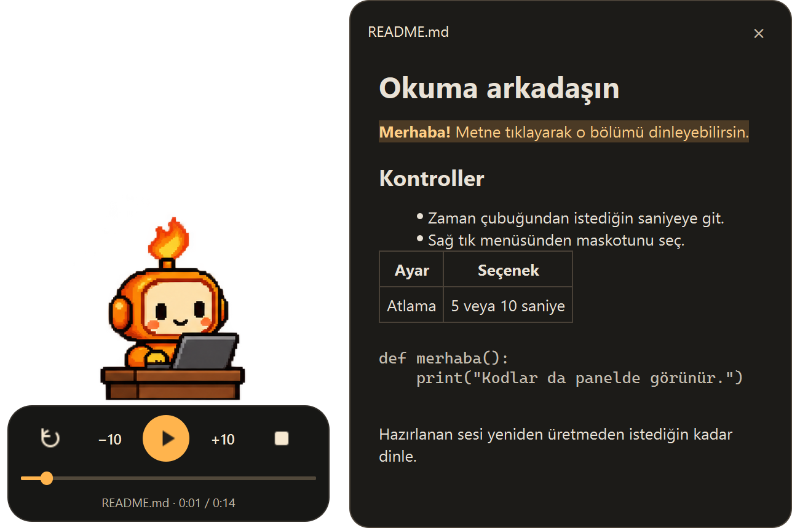
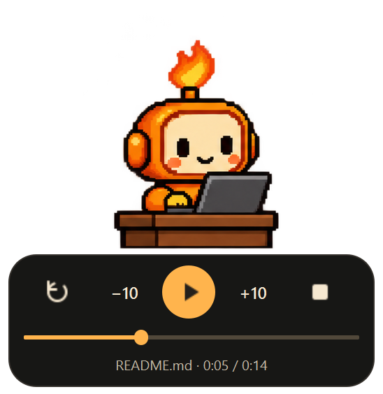

WINDOWS İÇİN KÜÇÜK BİR OKUMA ARKADAŞI
Sen işine bak.
Notların
ses bulsun.
README'ler, proje notları, uzun belgeler.
Markdown dosyanı seç; masaüstündeki arkadaşın
senin için Türkçe okusun.
Windows 10 / 11 · x64 · Model kurulumun içinde
Etkileşimli arayüz önizlemesi · Bu sayfada ses çalmaz.
SADECE DİNLEMEKLE KALMA
Metinde kaldığın
yeri de gör.
Dosya adına tıkla, Markdown panelini aç.
Okunan bölüm vurgulansın; merak ettiğin metne tıkla, ses oradan devam etsin.

SENİN TEMPOSUNDA
Biraz dur.
Baştan dinle.
İleri sar.
Konumunu kaybetmeden ara ver. Zaman çubuğuna tıkla veya sürükle; 5 ya da 10 saniye atla. Hazırlanmış sesi baştan dinlemek için yeniden bekleme.

BİR KOPYASI SENDE KALSIN
Dinle.
Sonra yanında götür.
Hazırlanan sesi seçtiğin okuma hızıyla WAV olarak kaydet. Kod bloklarını okumaya dahil etmek de senin seçimin.
48 kHz · mono · PCM16KURULUMDAN İLK OKUMAYA
İndir. Aç. Dinle.
Python kurulumu yok. Model aramak yok.
Okuma arkadaşın kurulumla birlikte geliyor.
- 01
Windows'a kur.
Setup EXE'yi indir ve kurulum adımlarını tamamla. Başlat menüsü veya masaüstü kısayolundan aç.
- 02
Dosyanı seç.
Maskota tıkla. Bilgisayarından bir
.mdveya.markdownbelgesi seç; istersen maskotunu değiştir. - 03
Hazır olunca dinle.
Ses bilgisayarında hazırlanır. Tamamlandığında oynatma otomatik başlar; internet kapalı olsa da.
Uzun belgelerde sesin hazırlanması, bilgisayarına ve metnin uzunluğuna göre zaman alabilir.
İnternet bağlantısı gerekiyor mu?
Kurulum dosyasını indirmek için gerekir. Ses modeli kurulumun içindedir; Windows uygulaması ses üretmek ve dinletmek için internete veya API anahtarına ihtiyaç duymaz. Belgelerin bilgisayarında işlenir.
Hangi sistemlerde ve dillerde çalışır?
Windows 10 (1809 ve sonrası) ve Windows 11, x64 için hazırlanmıştır. CPU üzerinde tek Türkçe ses kullanır; ayrı ekran kartı veya Python kurulumu gerekmez. Yabancı kelimelerin telaffuzu değişebilir.
Bu sayfadaki oynatıcı ses üretiyor mu?
Bu sayfadaki oynatıcı bir arayüz önizlemesidir. Dosya yüklemez ve ses çalmaz. Markdown belgelerini dinlemek için Windows uygulamasını indirip bilgisayarında açmalısın.
Yeni sürüme nasıl geçerim?
Maskotta veya sistem tepsisi simgesinde sağ tık → Çıkış yap. GitHub'daki son sürümün Setup EXE'sini indirip çalıştır. Aynı Windows kullanıcısındaki maskot seçimi, pencere konumu ve tercihlerin korunur. Güncelleme denetimi otomatik yapılmaz.
Uygulamayı nasıl kaldırırım?
Windows Ayarlar → Uygulamalar veya Denetim Masası → Programlar ve Özellikler ekranında MascotReader'ı seçip Kaldır'a tıkla. Uygulama açıksa önce sağ tık → Çıkış yapman istenir.
Hangi belgeleri okuyabilirim?
UTF-8 kodlamalı Markdown dosyalarını açabilirsin. Başlıklar, paragraflar, listeler ve tablo metinleri sırayla okunur. Kod blokları isteğe bağlıdır. Metinden atlama bölüm başlangıçlarına yapılır; kelime düzeyinde hizalama yoktur.
MASAÜSTÜNDE BİR YER AÇ.